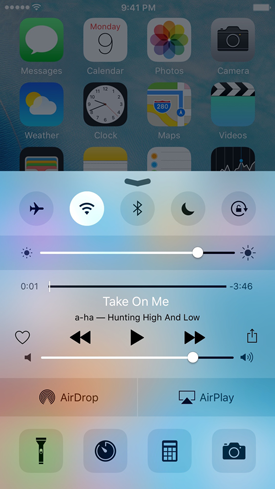
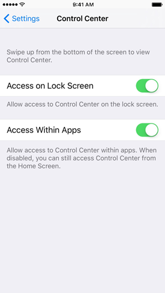

Control Center
Control Center provides quick access to frequently used settings and features. You can access Control Center from anywhere in iOS—including the Lock screen. Just swipe up from the bottom of the display.
In Control Center, you can adjust these settings:
- Turn on or off airplane mode, Wi-Fi, Bluetooth, Do Not Disturb, and the screen-orientation lock.
- Adjust screen brightness.
- Play, pause, or skip a song, and adjust playback volume.
- Connect to an AirPlay device or toggle between audio output.
- Adjust whether your device is discoverable for AirDrop.
Control Center also includes quick access to these apps or features:
- Camera
- Timer
- Calculator (iPhone and iPod touch only)
- Flashlight (iPhone and iPod touch only)
- Night Shift (available on certain devices only)
If your device is not locked, you can also access the currently playing audio app by tapping the song title.
To close Control Center, swipe down, tap the top of the screen, or press the Home button.
In Settings > Control Center, you can enable and disable access to Control Center from the Lock screen or from apps:
